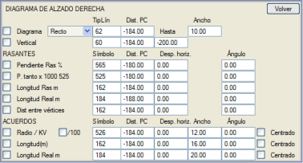

| |
|
BOYKESİT PAFTALARI İÇİN ŞABLONLAR: BOYKESİT DİYAGRAMLARI
|
Yatay güzergah elemanları diyagramlarına (yatay kurp diyagramları) benzer şekilde, resimde gösterilen diyalog kutusu aracılığıyla düşey güzergah (profil) diyagramlarını (boykesit diyagramları) gösterme seçeneği de mevcuttur. Diyagram seçeneği işaretlendiğinde, bu diyagram belirtilen çizgi tipiyle ve karşılaştırma düzlemine olan mesafede temsil edilir. Çizilen diyagram için bir Genişlik belirlenir; sabit eğimli kesimler merkezi bölgeye (karşılaştırma düzlemine göre tanımlanan mesafede) ve düşey kurplu kesimler üst kısma (dışbükey) ve alt kısma (içbükey), karşılaştırma düzlemine göre Genişlik alanında tanımlanan mesafede yerleştirilir. Eğer Kurplar seçeneği işaretlenirse, düşey güzergah elemanları ve düşey kurplar, boykesit bilgi bandında (gitar) tüm uzunluklarını ve Genişliği kaplayan doğrular ve eğriler olarak temsil edilir. Dikey seçeneği etkinleştirildiğinde, karakteristik noktalardan sabit bir yüksekliğe kadar dikey çizgiler çizilir. Ayrıca, aşağıdaki veriler belirtilen sembol tipiyle ve karşılaştırma düzlemine olan mesafede etiketlenebilir:
Düşey güzergah ve düşey kurp verilerinin her biri için etiketlemede kullanılan sembollerin açısını tanımlamak mümkündür. Kurplar modunda düşey güzergah üzerine gelen semboller için, eğer açı sıfır ise, eğimi alır. Sembolün yatay olarak temsil edilmesi isteniyorsa, 360 değeri verilmelidir. Yarıçap/Kv, plandaki uzunluk ve gerçek uzunluk notasyonları, düşey kurp merkezine referans verilebilir. Boru hattı şablonları TUBOS3.gui, TUBOS4.gui ve TUBOS5.gui, diğerlerinin yanı sıra, bu diyagramları kullanır. |